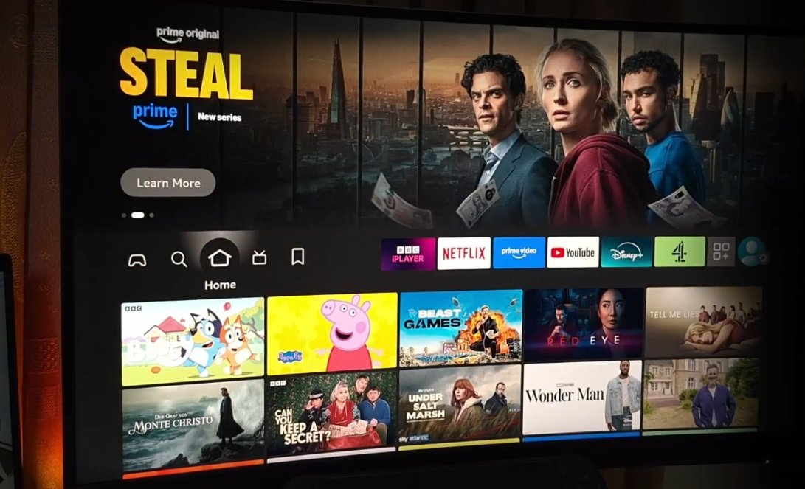
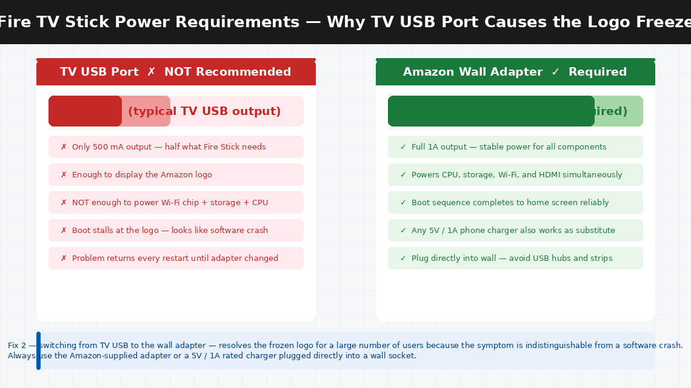
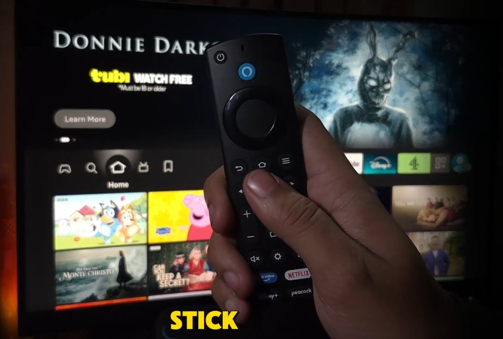
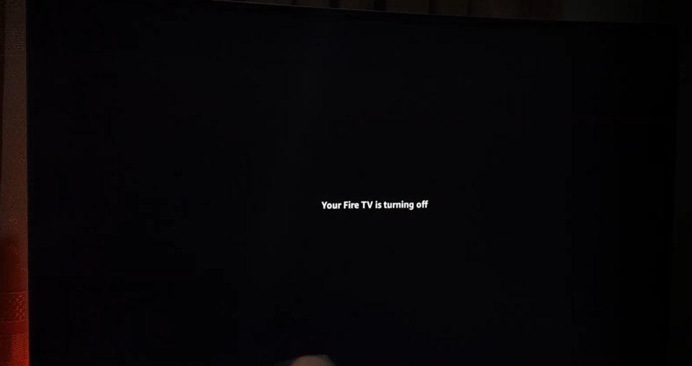
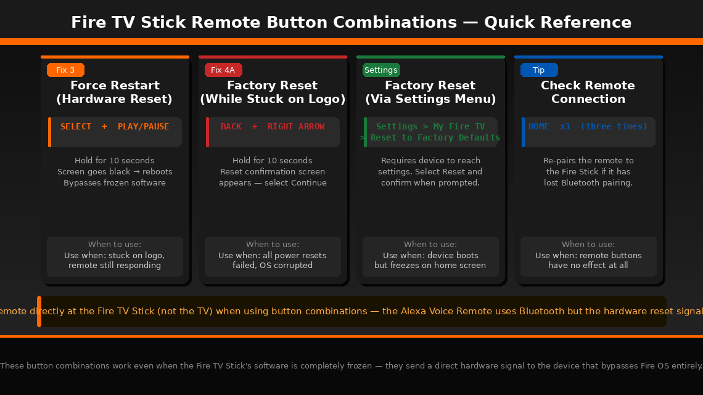

The Amazon Logo. Just Sitting There.
There’s nothing more deflating than settling onto the couch after a long day, picking up the remote, and watching your Fire TV Stick display the Amazon logo — and then just… nothing. The logo sits there. The little loading animation spins. You wait thirty seconds. A minute. Two minutes. The logo is still there, and whatever you were planning to watch tonight is not happening.
You unplug it and plug it back in. Logo again. You wait longer this time. Still stuck. You press every button on the remote. Nothing responds.
Here’s what matters: this is one of the most reported Fire TV Stick problems worldwide, and it is almost always completely fixable at home in under ten minutes. Millions of Fire Sticks have been rescued from this exact frozen logo screen without a single Amazon support call. This guide walks you through every fix, from fastest to most thorough.
What Does “Stuck on the Amazon Logo” Mean?
In plain English, your Fire TV Stick is frozen during the boot sequence — the startup process it runs every time it powers on — and cannot get past the initial loading stage.
When you plug in a Fire TV Stick, it goes through a specific sequence of startup steps: the bootloader initialises the hardware, Fire OS loads from internal storage, system services start up one by one, and finally the home screen interface launches. The Amazon logo is displayed during the early and middle stages of that sequence. When it freezes there and never progresses, something has blocked one of those middle steps.
The four most common reasons this happens:
- A Fire OS software update was interrupted — by a power cut, accidental unplug, or network dropout — leaving the operating system in a partially updated state that can neither finish the update nor roll back to a working version. This is the single most common cause.
- The Fire Stick is powered from a TV’s USB port instead of the Amazon wall adapter. TV USB ports deliver only 500 mA — half the current the Fire Stick needs during the most power-intensive boot operations. Enough to show the logo; not enough to complete startup.
- Internal storage corruption — from an abrupt shutdown or a prolonged power outage — preventing Fire OS from loading the files it needs.
- A corrupted app or system cache blocking the startup routine — particularly common after a long period without restarting or after a problematic app update.
In the vast majority of cases, a proper power reset or a factory reset will have the device working again in minutes.

What You’ll Need
You need almost nothing for this fix — everything is already in your living room:
- Your Fire TV Stick and the Amazon-supplied power adapter and USB cable (important — not the TV’s USB port)
- The Fire TV remote with working batteries
- A TV with an HDMI port
- About 5–15 minutes of your time
No screwdrivers, no computers, no downloads required for Fixes 1–4.
5 Fixes — Easiest to Hardest
Work through these in order. The frozen logo screen is resolved at Fix 1 or Fix 2 for the overwhelming majority of Fire TV Stick users. Only move to the next step if the previous one didn’t work.
The critical difference between a standard unplug-and-replug and a proper power reset is how long you wait. Simply unplugging and replugging often lands you back at the same frozen logo because a partially loaded state gets restored from cache. A full 60-second discharge forces a complete cold start.
- Unplug the Fire TV Stick’s power adapter from the wall socket completely — not from the HDMI port, and not just from the USB port on the stick itself. Pull the plug from the wall.
- Wait a full 60 seconds. This is longer than the standard advice but ensures the Fire Stick’s capacitors fully discharge and any held state in RAM is cleared completely.
- While waiting, remove the batteries from the remote and reinsert them — a remote with weak batteries can occasionally interfere with the startup handshake.
- Plug the power adapter back into the wall socket and reconnect to the Fire Stick.
- Watch the Amazon logo carefully — if the boot sequence progresses past the logo to a loading bar or directly to the home screen, the reset worked.
- If the logo freezes again within 60–90 seconds of startup, move to Fix 2.
This fix resolves the frozen logo screen for a surprisingly large number of users — particularly those who have the Fire Stick plugged directly into one of the TV’s USB ports for convenience.
Fire TV Sticks require a stable 5V / 1A (1000 mA) power supply to boot successfully. Most TV USB ports deliver only 500 mA — exactly half the current the Fire Stick needs during its most power-intensive boot operations. This is just enough power to start the boot sequence and display the logo, but not enough to power the Wi-Fi chip, storage controller, and processor simultaneously during the later boot stages. The result looks exactly like a software freeze but is actually a power starvation issue.
- If the Fire Stick is currently plugged into your TV’s USB port, unplug it entirely.
- Connect the Fire Stick to the Amazon-supplied power adapter (the small white plug from the box) and plug that adapter directly into a wall socket.
- Keep the Fire Stick connected to the TV’s HDMI port as normal.
- Power on and observe whether the boot sequence now completes fully.

If the power reset didn’t help and the correct adapter is already in use, Fire TV Sticks support a hardware-level forced restart using only the remote — a button combination that sends a direct restart signal to the device, bypassing the normal software shutdown sequence.
- Make sure the Fire TV Stick is plugged in and displaying the stuck Amazon logo.
- Point the remote directly at the Fire TV Stick (not at the TV — the Alexa Voice Remote’s hardware signals go toward the stick).
- Press and hold the Select button (the circular button in the centre of the navigation ring) and the Play/Pause button simultaneously.
- Hold both buttons for 10 seconds. Do not release early.
- The Fire Stick will force-reboot — the screen will go black briefly before the Amazon logo reappears.
- Watch whether the boot sequence progresses past the logo this time.

If three proper restarts haven’t broken the loop, the underlying issue is almost certainly corrupted system files or a failed OS update that has left Fire OS in an unrecoverable state. A factory reset wipes the device completely and reinstalls a clean version of Fire OS from scratch.
Method A — While stuck on the logo (recommended):
- With the Fire Stick displaying the stuck Amazon logo, point the remote directly at the device.
- Press and hold the Back button (curved arrow) and the Right directional button (on the navigation ring) simultaneously.
- Hold both buttons for 10 seconds.
- A factory reset confirmation screen should appear — select “Continue” using the Select button to confirm the reset.
- The device will restart and display a fresh setup screen identical to when it was new.
Method B — Via Settings menu (if device partially boots):
- Navigate to Settings > My Fire TV > Reset to Factory Defaults.
- Confirm when prompted.
After the factory reset completes:
- Connect to your Wi-Fi network, sign in with your Amazon account, and allow the device to complete initial setup and download any pending Fire OS updates.
- Keep it plugged into the wall adapter throughout setup — do not use the TV’s USB port during this process.


If the factory reset via remote is not triggering — the device appears completely unresponsive to all button combinations — Fire OS itself may be so corrupted that it cannot respond to remote inputs. In this situation, it is possible to re-flash the Fire OS firmware using a Windows computer and Amazon’s ADB (Android Debug Bridge) tools.
- Download the Android Debug Bridge (ADB) tools from the official Android developer site.
- Download the correct Fire OS firmware file for your specific Fire Stick model from Amazon’s developer portal.
- Connect the Fire Stick to your Windows computer via a USB OTG cable while it is also connected to power.
- Use ADB command-line commands to push the firmware file to the device and initiate the flash.
- For the most current step-by-step instructions specific to your Fire Stick generation, search “Fire TV Stick ADB re-flash [your model]” on AFTVnews.com — this site maintains the most accurate and up-to-date firmware flashing guides for every Fire Stick model.
When to Contact Amazon
Fire TV Sticks are sealed consumer devices with no user-serviceable internal parts. When the device itself has a hardware fault, the correct path is Amazon’s support and warranty replacement process:
- No signs of life at all — no logo, no light, nothing on screen even with the correct power adapter and a confirmed working HDMI port. Test the HDMI port with another device first.
- The factory reset completes but the device freezes on the logo again immediately on the very next boot, before any apps are installed. This indicates a hardware fault — most likely a failed internal storage chip — that no software fix can address.
- The device is physically damaged — cracked, exposed to moisture, or showing burn marks near the USB connector.
- Your Fire TV Stick is within its warranty period. Amazon offers a 1-year limited warranty on Fire TV Stick devices. A device that cannot be recovered with a factory reset is eligible for a free replacement — typically shipped within 2–3 business days.
To reach Amazon device support:
- US: amazon.com/devicesupport
- India: amazon.in/devicesupport
- Or log into your Amazon account → Returns & Orders > Get help with a device
Amazon’s device support team can remotely diagnose Fire TV Sticks connected to your account. Have your device’s serial number ready — it’s printed on the back of the Fire Stick and also visible in your Amazon account under Manage Your Content and Devices.
Quick Summary
| Fix | Difficulty | Time Needed |
|---|---|---|
| Full power reset (60-second discharge from wall) | Very Easy | 2 minutes |
| Switch to Amazon wall adapter from TV USB port | Very Easy | 1 minute |
| Force restart via Select + Play/Pause buttons | Very Easy | 1 minute |
| Factory reset via Back + Right arrow combination | Easy | 10 minutes |
| ADB firmware re-flash via Windows computer | Advanced | 30–60 minutes |
Start at Fix 1 and work forward. For most people, the frozen Amazon logo is caused either by insufficient power from a TV USB port (Fix 2 — a one-minute solution) or by a software corruption that a factory reset clears in ten minutes. The remote button combinations mean you never need a computer or cable for the most common scenarios.
Brought your Fire Stick back? Fix 2 — switching from the TV’s USB port to the wall adapter — is the one that surprises people most. The device streams perfectly fine from the TV USB port but quietly can’t gather enough power to complete a full boot. If your Fire Stick ever freezes on the logo again after an update, go straight to Fix 4 — the factory reset takes ten minutes and almost always works.